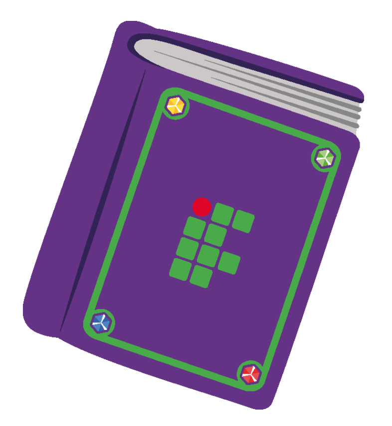
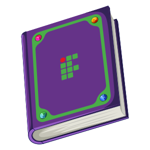
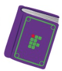
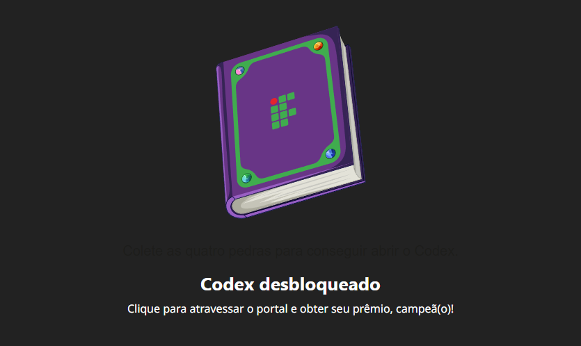

O Codex ProITEC transforma o estudo do 9º ano em um desafio envolvente. Os estudantes reúnem 4 Gemas do Conhecimento para abrir o Codex e receber o prêmio máximo!
Veja os elementos visuais encantadores do Codex que motivam os alunos durante todo o ano letivo:

O livro fechado aguarda as 4 gemas para se abrir.

A animação brilhante quando a chave se completa.

Destaque visual na sala virtual do Moodle.

Identidade oficial do programa IFRN.
Para abrir o Codex, o estudante precisa conquistar as 4 Gemas do Conhecimento completando 100% de cada disciplina:
| Gema do Conhecimento | Disciplina Correspondente | Como o Aluno Conquista? |
|---|---|---|
| 📐 Gema de Matemática | Matemática (FIC.1196) |
Completando todas as videoaulas e quizzes de Matemática. |
| ✍️ Gema de Língua Portuguesa | Língua Portuguesa (FIC.1195) |
Lendo os textos e realizando os exercícios de Português. |
| 🤝 Gema de Ética e Cidadania | Ética e Cidadania (FIC.1197) |
Participando das atividades do módulo de Ética. |
| 🎓 Gema de Seminário | Seminário de Integração (FIC.1198) |
Concluindo o módulo de acolhimento e integração IFRN. |
Assim que a última gema é encaixada no Codex, a fechadura mágica é destravada! O estudante ganha acesso direto ao Mapa de Dicas do Exame de Seleção, com segredos de prova, conteúdos prioritários e estratégias preparadas pelos professores do IFRN.
O Codex é o principal motivador de engajamento da suíte. Como a recompensa do Mapa de Dicas é altamente desejada pelos alunos que sonham em entrar no IFRN, o Codex garante que eles não abandonem nenhuma das 4 disciplinas!